Dynamic materials for making animations on your slide of slideshow effects.
Wheel:
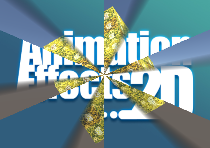
Creates a texture slide transitions. Translate one texture A to texture B with a wheel effect.
Creates a texture slide transitions. Translate one texture A to texture B with a wheel effect.
Wheel:
Basic effects for 2D object or no shadow situation.
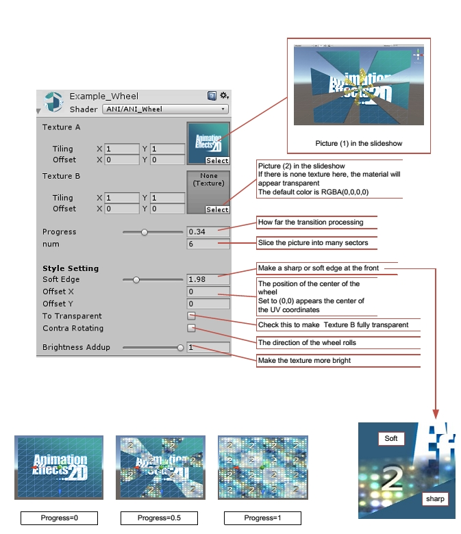
Wheel light /Surfaceshader:
For 3D object, with light and shadow.
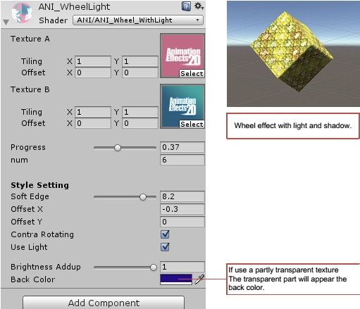
Color-Run:
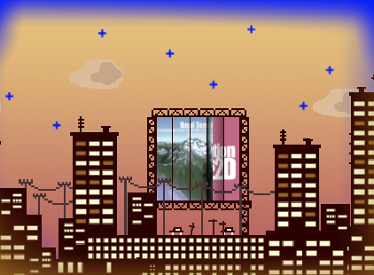
Add a color changing light on the main texture.
Add a color changing light on the main texture.
Color-Run-Between-Two/With-Gradient-Map:
Effects for 2D object or no shadow situation.
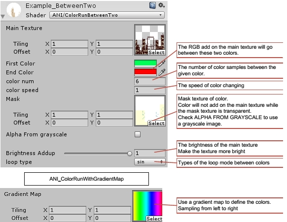
Loop types:
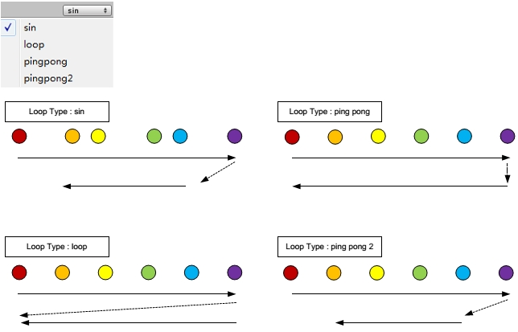
Halftone:
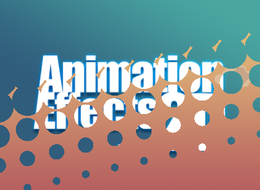
Texture slide transitions with a halftone effect.
Texture slide transitions with a halftone effect.
Halftone Mask:
Basic Effects with fewer Properties. For 2D object or no shadow situation.
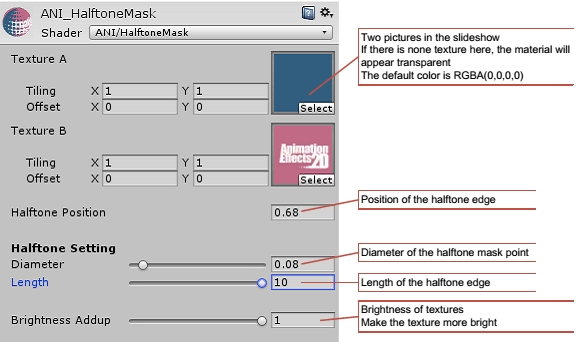
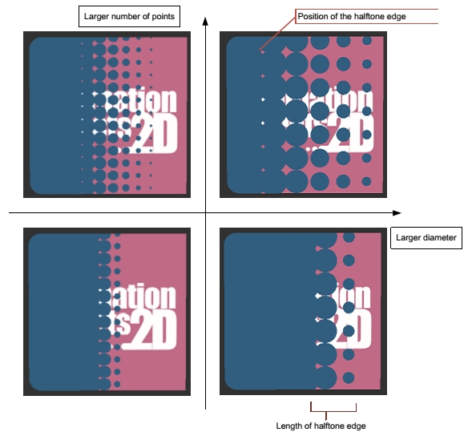
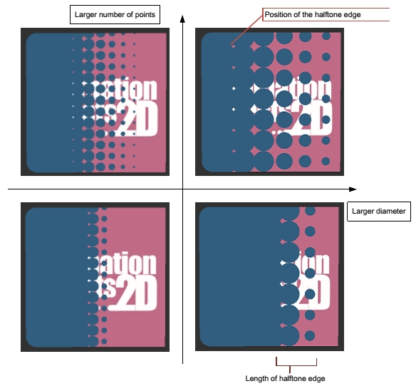
Halftone Mask Advantage:
Advantage effects. For 2D object or no shadow situation.
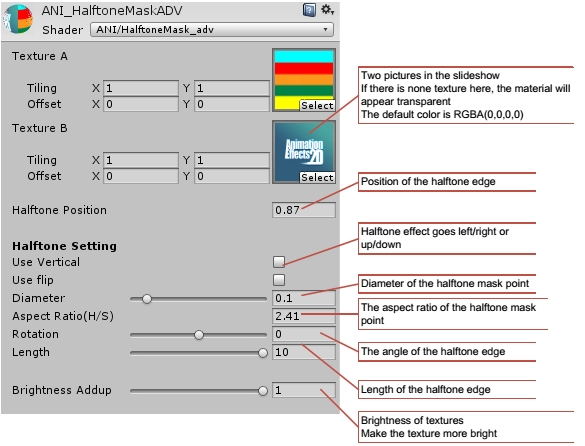
Vertical and Flip:
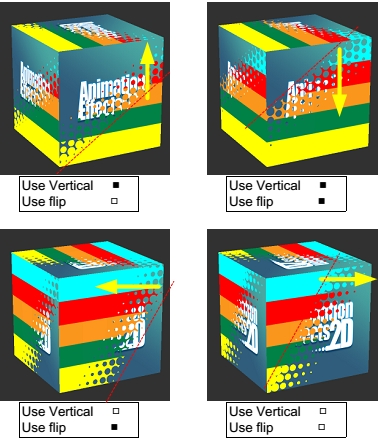
Rotation:
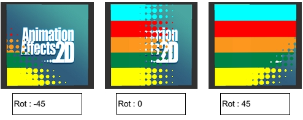
Aspect Ratio:
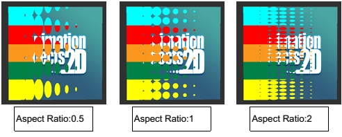
Halftone Mask Texture:
Use a mask texture as the halftone mask.
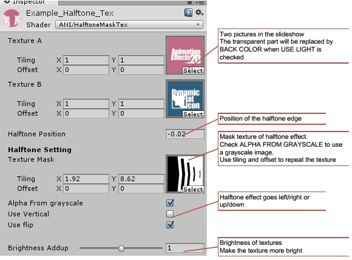
Halftone Mask Light/Surfaceshader:
For 3D object, with light and shadow.
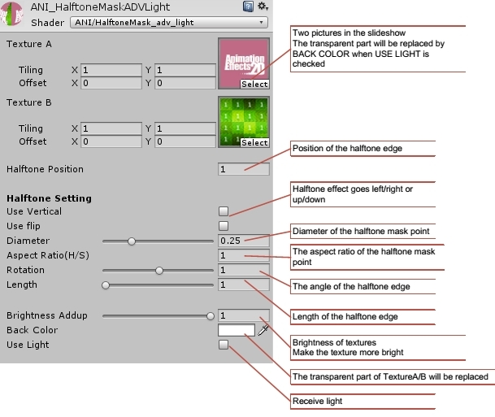
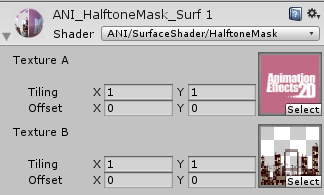
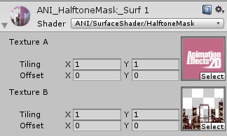
Textures with transparent parts supported.
remove
#pragma surface surf Standard fullforwardshadows vertex:vert alpha:fade
Tags {"Queue"="Transparent" }and
to receive shadow.
Triangular Billboard:
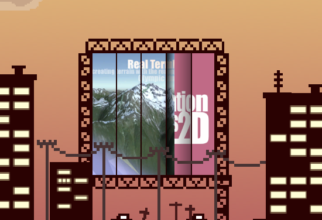
Analog a shutter or triangular billboard.
Analog a shutter or triangular billboard.
Shutter-lite:
Basic Effects with fewer Properties. For 2D object or no shadow situation.
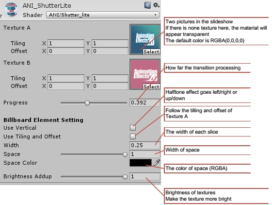
Triangular Billboard Advantage:
Advantage effects with more Properties. For 2D object or no shadow situation.
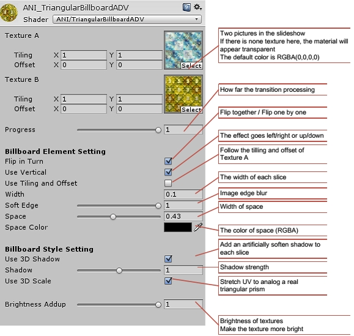
Triangular Billboard ADV light/Surfaceshader:
For 3D object, with a light and shadow.
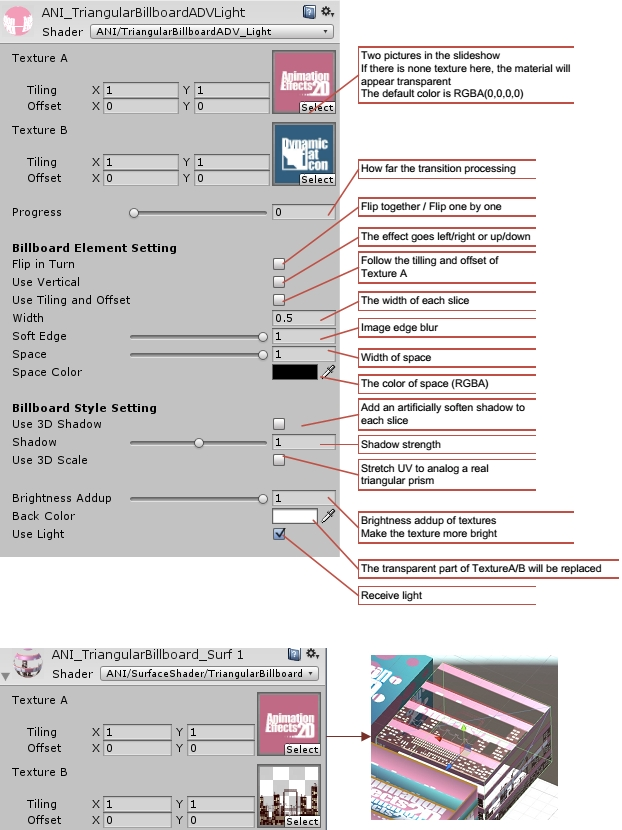
Textures with transparent parts supported.
remove
#pragma surface surf Standard fullforwardshadows vertex:vert alpha:fade
Tags {"Queue"="Transparent" }and
to receive shadow.
Slideshow helper:
Example of making slideshow with Wheel/Halftone Effects/Triangular Billboard.
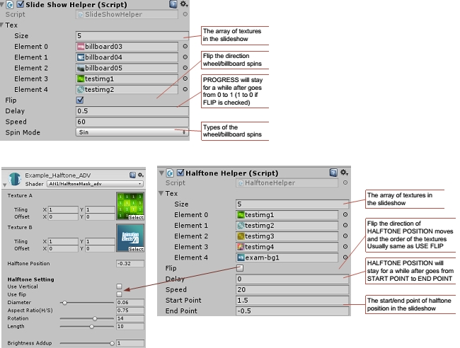